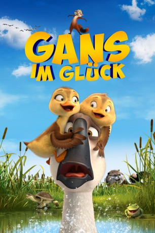

gesehen am 09.03.2019
gesehen am 09.03.2019Alternativ: Duck Duck Goose (Englischer Titel) gesehen am 09.03.2019
 
 IMDB-Wertung: 5.7 / 10
IMDB-Wertung: 5.7 / 10  Metascore:
Metascore: 
Der Gänserich Peng ist ein ziemlicher Angeber und bringt mit seinen halsbrecherischen Kunststücken ständig das Formationsflugtraining seiner Artgenossen durcheinander. Eines Tages haben die übrigen Gänse den Schnabel voll und brechen einfach ohne Peng in Richtung Süden auf, wo die Gänse den Winter verbringen wollen. Peng kann infolge einer Verletzung nicht mehr fliegen und ihnen deswegen nicht sofort folgen. Eher zufällig wird er dann zum Lebensretter zweier vorlauter Entenküken, die wie er zurückgelassen wurden und ihm fortan auf Schritt und Tritt folgen. Zunächst hat Peng keine große Lust, den Beschützer für die beiden Küken zu spielen und erklärt sich nur aus selbstsüchtigen Gründen bereit, gemeinsam die beschwerliche Reise gen Süden anzutreten. Doch nach und nach wachsen Peng die beiden Enten ans Herz...
Jahr: 2018
Dauer: 82 Minuten
FSK: 0
Land: China Studio: Wild BunchTonspuren: DTS - ,
Untertitel: Deutsch,
Auflösung: 1080p (1920x800) Größe: 5201 MB
Genre: Komödie, Abenteuer, Animation/Trick, Familie
Regisseur: Christopher Jenkins
Drehbuch: Christopher Jenkins, Christopher Jenkins, Rob Muir, Scott Atkinson, Tegan West
Soundtrack: Mark Isham
Darsteller:
 Jim Gaffigan als Peng
Jim Gaffigan als Peng Zendaya als Chi
Zendaya als Chi Greg Proops als Banzou
Greg Proops als Banzou Natasha Leggero als Jin Jing
Natasha Leggero als Jin Jing Diedrich Bader als Bing
Diedrich Bader als Bing Carl Reiner als Larry
Carl Reiner als Larry Stephen Fry als Frazier
Stephen Fry als Frazier Craig Ferguson als Giles
Craig Ferguson als Giles Jennifer Grey als Edna
Jennifer Grey als Edna Rick Overton als Stanley
Rick Overton als Stanley Cathy Cavadini als
Cathy Cavadini als  John DeMita als
John DeMita als  Daamen J. Krall als
Daamen J. Krall als  Jason Pace als
Jason Pace als  Elizabeth Pan als
Elizabeth Pan als  Elizabeth Sung als
Elizabeth Sung als  Regina Taufen als
Regina Taufen als  Carter Hastings als
Carter Hastings als Datei: X:\Kinder Filme (G-M)\Gans im Glück (2018, FSK0, 1920x800).mkv seit 09.03.2019
Festplatte: Kinder-Filme+Trick
 Es gibt insgesamt 84 Filme in der Gruppe 'Kinder Filme (G-M)'
Es gibt insgesamt 84 Filme in der Gruppe 'Kinder Filme (G-M)'